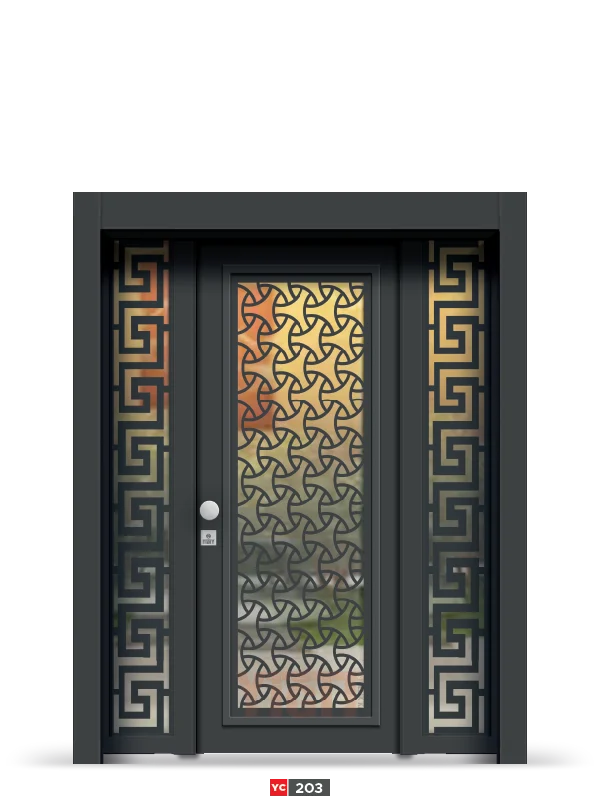

Apartman dış kapısı, binanın güvenliğini sağlayan ilk savunma hattı. Aynı zamanda apartmanın dış görünümünü de belirleyen önemli bir mimari öğe. Peki, yüzlerce kişinin günlük kullanacağı bu kapıyı seçerken nelere dikkat etmeli? Kat malikleri toplantısında hangi kriterleri göz önünde bulundurmalı? Bu rehberde, apartman dış kapısı seçiminde bilmeniz gereken her şeyi bulacaksınız.
Apartman Dış Kapısı Neden Özel Bir Seçim Gerektirir?
Apartman dış kapısı, daire kapılarından çok daha zorlu koşullarda çalışıyor. Günde onlarca kez açılıp kapanıyor, farklı kullanıcılar tarafından kullanılıyor ve sürekli dış hava koşullarına maruz kalıyor. Bu nedenle dayanıklılık, güvenlik ve uzun ömürlülük kritik önem taşıyor.
Üstelik apartman kapısı ortak bir yatırım. Yanlış seçim yapıldığında, tüm kat maliklerini etkileyen maliyetli bir sorun haline gelebiliyor.
Apartman Dış Kapısı Seçerken 8 Temel Kriter
1. Yoğun Kullanıma Dayanıklılık
Apartman kapısı günde 50-100 kez açılıp kapanabiliyor. Bu yoğun kullanım, özel dayanıklılık standartları gerektiriyor:
- Güçlü Menteşeler: Minimum 4 adet, ağır yük taşıyabilir menteşe
- Kalın Sac: Minimum 1,5 mm, ideal 2 mm çelik sac
- Takviyeli Kasa: Deforme olmayan sağlam kasa yapısı
- Kaliteli Kilit: 100.000+ açma-kapama döngüsüne dayanıklı
2. Güvenlik Standartları
Apartman dış kapısı, binanın tüm sakinlerinin güvenliğini sağlamalı. TSE standartlarına göre minimum C sınıfı, ideal olarak D sınıfı kapı tercih edilmeli.
İletişim
Projeniz için fiyat teklifi alın
Apartman dış kapısı projeleriniz için ölçü, montaj ve model seçenekleri hakkında bilgi alın.
3. Yangın Güvenliği
Apartman dış kapıları için yangın güvenliği kritik önem taşıyor. Özellikle 5 kattan fazla binalarda yangına dayanıklı kapı zorunlu olabiliyor.
Yangın Kapısı Özellikleri:
- 30-60-90 dakika yangın direnci
- Otomatik kapanma sistemi
- Duman sızdırmazlık
- Yangın güvenlik sertifikası
4. Ses Yalıtımı
Apartman girişi genellikle gürültülü bir alan. Sokak sesleri, merdiven boşluğu yankıları… İyi bir ses yalıtımı, tüm dairelerin konforunu artırıyor.
Kaliteli bir apartman kapısı, dış sesleri minimum %50-60 oranında azaltmalı. Bunun için:
- Çift cidarlı yapı
- Yalıtım malzemesi dolgulu gövde
- Conta sistemli kapı çerçevesi
- Kalın cam kullanımı (varsa)
5. Hava Koşullarına Dayanıklılık
Dış mekâna açılan apartman kapıları, yağmur, kar, güneş ve rüzgâra sürekli maruz kalıyor. Bu nedenle:
- UV Dayanımlı Boya: Güneşte solmayan, çatlak atmayan
- Su Sızdırmazlık: Yağmur suyu girişini engelleyen eşik sistemi
- Paslanmaz Malzeme: Galvanizli veya paslanmaz çelik
- Isı Yalıtımı: Enerji kaybını önleyen yalıtım
6. Kolay Kullanım ve Erişilebilirlik
Apartman kapısını yaşlılar, çocuklar, engelliler de kullanıyor. Bu nedenle:
- Kolay açılır-kapanır mekanizma
- Otomatik kapı seçeneği (hidrolik veya elektrikli)
- Engelli erişimine uygun eşik yüksekliği
- Geniş açılım alanı
7. Bakım ve Onarım Kolaylığı
Apartman kapısının bakımı ortak gider. Sık bakım gerektiren kapılar, ek maliyet demek. İdeal apartman kapısı:
- Minimal bakım gerektirmeli
- Yedek parça bulunabilir olmalı
- Yerel servis desteği olmalı
- Uzun garanti süresi sunmalı
8. Estetik ve Bina Mimarisi Uyumu
Apartman kapısı, binanın yüzü. Modern bir binaya klasik kapı, klasik binaya ultra modern kapı yakışmıyor. Kapı seçerken binanın mimarisini göz önünde bulundurun.
Apartman Kapısı Çeşitleri
Tek Kanatlı Apartman Kapıları
Standart apartman girişleri için en yaygın seçenek. 100-120 cm genişliğinde, pratik kullanım sunar. Küçük ve orta boy apartmanlar için ideal.
Avantajları:
- Ekonomik
- Kolay montaj
- Az yer kaplar
- Bakımı kolay
Çift Kanatlı Apartman Kapıları
Geniş girişli, prestijli apartmanlar için tercih edilir. 180-240 cm genişliğe kadar üretilebilir. Büyük eşya taşıma kolaylığı sağlar.
Avantajları:
- Geniş geçiş imkânı
- Prestijli görünüm
- Havalandırma için tek kanat açılabilir
- Büyük binalar için uygun
Otomatik Apartman Kapıları
Hidrolik veya elektrikli sistemle çalışan otomatik kapılar, konfor ve güvenlik sağlar. Özellikle yaşlı nüfusun yoğun olduğu binalarda tercih edilir.
Özellikler:
- Uzaktan kumanda ile açılma
- Otomatik kapanma sistemi
- Sensörlü güvenlik
- Acil durum manuel açma
Kat Malikleri Toplantısında Nelere Dikkat Edilmeli?
Apartman kapısı değişimi, kat malikleri kararı gerektiriyor. Toplantıda şu konular mutlaka görüşülmeli:
1. Bütçe Belirleme
Kapı maliyeti, montaj, eski kapı sökümü ve olası ek işler için toplam bütçe belirleyin. Ortak gider veya aidat artışı konusunda karar alın.
2. Teknik Özellikler
- Güvenlik sınıfı (C veya D)
- Yangın direnci (gerekiyorsa)
- Ses yalıtımı seviyesi
- Otomatik sistem olup olmayacağı
3. Tasarım Seçimi
Kat maliklerinin çoğunluğunun beğendiği bir tasarım seçin. Birkaç alternatif görseli toplantıda paylaşın.
4. Garanti ve Servis
- Minimum 2 yıl garanti
- Yerel servis desteği
- Yedek parça garantisi
- Periyodik bakım anlaşması
Fiyat Aralıkları ve Maliyet Analizi
Apartman dış kapısı fiyatları, boyut, özellik ve kaliteye göre değişiyor:
| Kategori | Özellikler | Uygun Binalar |
|---|---|---|
| Ekonomik | Standart boyut, C sınıfı, basit tasarım | Küçük apartmanlar |
| Orta Segment | D sınıfı, ses yalıtımlı, kaliteli | Orta boy apartmanlar |
| Premium | Otomatik, yangın dirençli, özel tasarım | Büyük, prestijli binalar |
Maliyet Hesabı Yaparken Unutmayın:
- Montaj ücreti
- Eski kapı söküm maliyeti
- Olası duvar tamiratı
- Elektrik işleri (otomatik kapı için)
- İlk yıl bakım maliyeti
Montaj Süreci ve Dikkat Edilecekler
Apartman kapısı montajı, profesyonel bir ekip tarafından yapılmalı. Süreç genellikle şöyle ilerliyor:
- Ölçü Alma: Yerinde hassas ölçüm (1-2 gün)
- Üretim: 2-4 hafta (özel tasarımlarda daha uzun)
- Montaj Günü Planlaması: Sakinlere önceden bilgi verin
- Eski Kapı Sökümü: Dikkatli ve temiz söküm (2-3 saat)
- Yeni Kapı Montajı: Kasa ve kapı takılması (3-4 saat)
- Test ve Ayar: Tüm fonksiyonların kontrolü
Montaj Günü İçin Öneriler:
- Hafta sonu veya tatil günü tercih edin
- Alternatif giriş-çıkış planı yapın
- Asansör kullanımını düzenleyin
- Yüklenici ile net saat belirleyin
Bakım ve Uzun Ömürlü Kullanım
Apartman kapısının uzun yıllar sorunsuz çalışması için düzenli bakım şart:
Aylık Kontroller
- Kapı açılış-kapanış kolaylığı
- Kilit mekanizması çalışması
- Otomatik sistem kontrolü (varsa)
6 Aylık Bakım
- Menteşe yağlama
- Kilit temizliği ve yağlama
- Conta kontrolü
- Yüzey temizliği
Yıllık Profesyonel Bakım
- Tüm mekanizmaların kontrolü
- Ayar ve sıkılaştırma işlemleri
- Yalıtım kontrolü
- Boya ve yüzey kontrolü
Sık Sorulan Sorular
Apartman kapısı değişimi için kat maliklerinin kaçının onayı gerekir?
Kat Mülkiyeti Kanunu’na göre, ortak alan değişikliği için kat maliklerinin çoğunluğunun (yarısından fazlasının) onayı gerekir.
Apartman kapısı maliyeti nasıl paylaşılır?
Genellikle ortak giderden karşılanır veya tüm kat maliklerine eşit olarak dağıtılır. Bazı apartmanlarda aidat artışı yapılır.
Otomatik kapı elektrik kesintisinde çalışır mı?
Evet, kaliteli otomatik kapılar manuel açma özelliğine sahiptir. Elektrik kesintisinde elle açılabilir.
Apartman kapısı ne kadar sürede üretilir?
Standart modeller 2-3 hafta, özel tasarımlar 4-6 hafta sürebilir.
Yangın kapısı zorunlu mu?
5 kattan yüksek binalarda ve belirli kullanım alanlarında yangın kapısı zorunludur. Yerel yönetmelikler değişebilir.
Sonuç: Doğru Apartman Kapısı Nasıl Seçilir?
Apartman dış kapısı seçimi, tüm kat maliklerini etkileyen önemli bir karar. Güvenlik, dayanıklılık, estetik ve bütçe dengesini doğru kurmak gerekiyor. Bu rehberde anlattığımız kriterleri göz önünde bulundurarak, apartmanınıza en uygun kapıyı seçebilirsiniz.
Unutmayın: Kaliteli bir apartman kapısı, binanın değerini artırır, güvenliğini sağlar ve 20-30 yıl sorunsuz hizmet verir. Kısa vadeli tasarruf yerine uzun vadeli değer düşünün.
Yiğit Çelik Kapı olarak, 2003’ten beri apartman dış kapıları üretiyoruz. TSE belgeli üretimimiz, 40.000 m²’lik üretim kapasitemiz ve deneyimli ekibimizle, apartmanınız için ideal çözümü birlikte bulabiliriz.
Yiğit Çelik Kapı
Apartman dış kapısı çözümleri
Bina giriş kapıları için TSE belgeli üretim ve proje bazlı teklif alın.